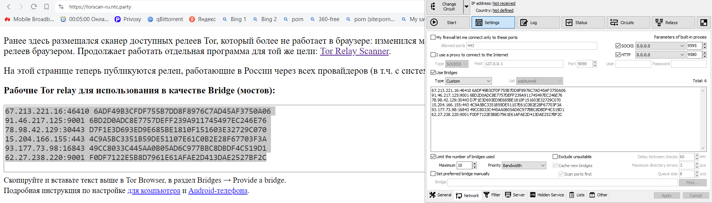
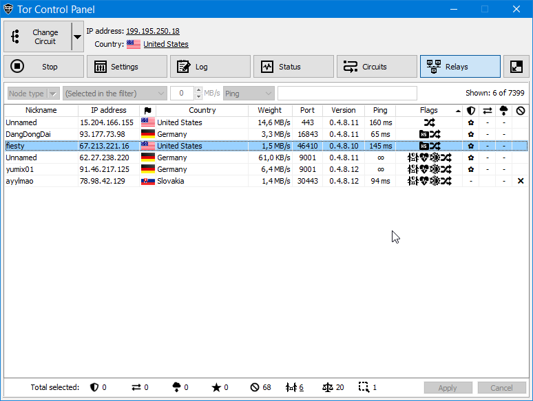

Релеи, что на torscan-ru.ntc.party рабочие ? Заюзал в качестве бриджей, пару-тройку раз пообновлял, но ни разу так и не получилось с их помощью куда-то пробиться 
Хм, действительно, не работает. Еще недавно использовал, соединялось.
Сами себя блокируете. Трафик проверяют на неизвестную сигнатуру.
Пока работает такое правило: релей доступен если туда не подключаться.
Только что проверил на новой и более старой версии Tor — работают без проблем, подключается к сети моментально.
Какой у вас провайдер?
Сегодня подключился тоже нормально. Ростелеком-Приморье. Может, что-то шаманили с блокировками?
Сейчас проверил - работает. На момент написания поста и за день - два до этого мосты с torscan-ru.ntc.party не работали. Никуда не выходило пробиться. Ни на сайты, ни на *.onion зеркала. Провайдер - Ростелеком. Расположение - край по соседству с @Dhowti
Учитывая данный момент
На этой странице теперь публикуются релеи, работающие в России через всех провайдеров (в т.ч. с системой ТСПУ)
от данной настройки при их использовании надо отказываться
ExcludeNodes {ru},{ua},{by},{kz}
ExcludeExitNodes {ru},{ua},{by},{kz}
?
Т.к. есть подозрение, что она могла послужить в моём случае причиной проблемы (а может и нет т.к. сейчас всё заработало и с ней).
На текущей момент используются релеи с адресами
5.255.104.239
90.110.228.218
45.66.121.44
92.76.117.210
185.65.134.167
пробить чьи они (какая страна) руки пока не дошли.
upd:
Нидерладны
Франция
Германия
Германия
Нидерланды
Так что может быть дело было в релеях из {ru},{ua},{by},{kz}. В общем, теперь помониторю сей момент.
Имеется в виду, что к ним можно подключиться из России, а не их расположение. Конфигурационные опции не должны влиять.
Релеи работоспособны ? Глохнет bootstrap после 5% (сейчас точно так же)
Apr 25 20:36:31.000 [notice] Bootstrapped 0% (starting): Starting
Apr 25 20:36:36.000 [notice] Starting with guard context “bridges”
Apr 25 20:36:36.000 [notice] Delaying directory fetches: No running bridges
Apr 25 20:36:38.000 [notice] Bootstrapped 5% (conn): Connecting to a relay
для кого то рабочие (у меня соединился сразу хотя там сегодня всего ничего релеев)
2024-04-26T06:59:28Z INFO tor_dirmgr::bootstrap: 1: Looking for a consensus. attempt=1
2024-04-26T06:59:28Z INFO tor_guardmgr::guard: We have found that guard [217.255.207.75:9001 $a79b6ef784a47b59e84c6b951301cb82fde76deb] is usable.
как вариант взять tor-scan и самому найти варианты
tor-relay-scanner-0.0.9.exe -n 1 -g 8 --timeout 15 --torrc -o bridges.conf
в torrc добавить %include C:\tor\bridges.conf (поправить путь к своему файлу)
или вообще попробовать конфиг через snowflake / webtunnel
Попробуйте очистить data-директорию (сохраните ключи от hidden service’ов, если пользуйетесь). Иногда такое бывает, какой-то баг, вероятно.
В общем лезет вот такая петрушка :
Apr 26 15:57:26.000 [warn] 13 connections died in state connect()ing with SSL state (No SSL object)
Apr 26 15:57:26.000 [warn] Problem bootstrapping. Stuck at 5% (conn): Connecting to a relay. (Connection timed out [WSAETIMEDOUT ]; TIMEOUT; count 15; recommendation warn; host 296C604F7D6499F073F372C0D37F8F11FB455AEB at 217.251.218.233:9001)
Apr 26 15:57:26.000 [warn] 14 connections have failed:
Apr 26 15:57:26.000 [warn] 14 connections died in state connect()ing with SSL state (No SSL object)
либо лезут бриджи из России/Белоруссии/Казахстана/Украины
Apr 26 16:00:08.000 [warn] Not using bridge at [scrubbed]: it is in ExcludeNodes.
Apr 26 16:00:09.000 [warn] Not using bridge at [scrubbed]: it is in ExcludeNodes.
Apr 26 16:00:10.000 [warn] Not using bridge at [scrubbed]: it is in ExcludeNodes.
В сумме получается неюзабельно. obfs4 и прочие транспорты для меня работают, в отличии от релеев с torscan-ru.ntc.party. Эх 
У меня такое было с собственной нодой. В какой-то момент перестала соединяться с релеями и я её отключил. Где-то осенью случилось.
data чистили ?
телепаты в отпуске == страна / провайдер / город
обновил с сайта что в заголовке.
но у меня РФ и провайдер Ростелеком/Калуга
могут не блочить то что забанено в Москва/Питер и наоборот (вот IPv6 например 3ий день не работает. вообще.)
Apr 27 15:38:23.000 [notice] Bootstrapped 0% (starting): Starting
Apr 27 15:38:25.000 [notice] Starting with guard context “bridges”
Apr 27 15:38:25.000 [notice] Delaying directory fetches: No running bridges
Apr 27 15:38:26.000 [notice] Bootstrapped 5% (conn): Connecting to a relay
Apr 27 15:38:26.000 [notice] Bootstrapped 10% (conn_done): Connected to a relay
Apr 27 15:38:27.000 [notice] Bootstrapped 14% (handshake): Handshaking with a relay
Apr 27 15:38:27.000 [notice] Bootstrapped 15% (handshake_done): Handshake with a relay done
Apr 27 15:38:27.000 [notice] Bootstrapped 20% (onehop_create): Establishing an encrypted directory connection
Apr 27 15:38:27.000 [notice] Bootstrapped 25% (requesting_status): Asking for networkstatus consensus
Apr 27 15:38:28.000 [notice] new bridge descriptor ‘sjcqsinc10gb03’ (fresh): $166922B8B71DEF5EA557DB3431CB65D9C564AAE2~sjcqsinc10gb03 [ENzHc8ZWi86JFQvCwfdyjJc6WhgQ7eW6mfkpIsRYFcs] at 104.1.91.206
Apr 27 15:38:28.000 [notice] Ignoring directory request, since no bridge nodes are available yet.
Apr 27 15:38:29.000 [notice] Bootstrapped 50% (loading_descriptors): Loading relay descriptors
Apr 27 15:38:29.000 [notice] new bridge descriptor ‘LightSteelBlue’ (fresh): $F12D17F296C7928E534D3CEF42BE8FA96961D550~LightSteelBlue [/WeCMnRm7pI/jfwBI8zELLawSbW7url+Ie8VsZSVaIU] at 77.0.1.4
Apr 27 15:38:29.000 [notice] Bootstrapped 75% (enough_dirinfo): Loaded enough directory info to build circuits
Apr 27 15:38:29.000 [notice] Bootstrapped 90% (ap_handshake_done): Handshake finished with a relay to build circuits
Apr 27 15:38:29.000 [notice] Bootstrapped 95% (circuit_create): Establishing a Tor circuit
Apr 27 15:38:30.000 [notice] Bootstrapped 100% (done): Done
Apr 27 15:38:36.000 [notice] new bridge descriptor ‘WYSWYG’ (fresh): $7BE9E2EF2BB41BB662D9A3CD68289B9E3DBF8A08~WYSWYG [eJ3K5EYfrvcqUOJ7/Upq7hVNV2wygejWSDDpvU1ZN/s] at 79.102.196.128
Правила для блокировки впн сервисов и приложений, включая адреса тор релеев, глобальны и загружены на все ТСПУ.
Адреса собирают и выгружают несколько раз в сутки. Могут быть редкие исключения, в том числе по задержке между сбором и выгрузкой.
Это не так, правила разнятся. И действительно иногда релеи, которые сканируются и выкладываются на torscan, могут не работать в других регионах. Конкретно замечал такое с релеями в «российских» диапазонах адресов, но с AS не в России.
причем редко (в отличии от проблем с ARTI) но тоже замечал зависание части мостов
или вообще попадание под какой то блок/отключение “что то там подозрительное”
ну и пока obfs4 / snowflake / webtunnel пробивают куда лучше чем просто BRIDGES
можно и ARTI взять. если не совсем уж все IP тора забанены. на моем провайдере оно вообще на родном конфиге соединяется
C:\TOR_arti_target_release>connection-checker.exe
Testing direct Tor connection…
Node: [78.46.123.26:8443 ed25519:zygA+DF3LGtcvAnBxzIDTw9cqP1QRt51QVccahODD0c $bfc4044119080d8bee70218978ee83c3fc16ae7a]
Node: [108.62.211.200:443 ed25519:5b7nnar2LG4v6PQzTtch/iLxseYBQfhK8zQWTNRkNSA $64e7278703021709e9187232be779058d2d431a1]
Node: [91.208.75.156:443 ed25519:k7FbPeGZCPKO0Jur1zzz5d0IByj+quEuyqORc9r/oYw $e2f67eec1c8cd17d17d309b63986ea6cbd18ea20]
direct Tor connection successful!
webtunnel вообще хорошо работает на текущий момент
Чистили
Россия / Ростелеком / Не сильно близко, но и не сильно далеко от Dhowti (я банально не хочу помогать РКН-м собирать статистику, указывая город)
Банальный гуглёж ошибки выдаёт Connections died in state handshaking (TLS) - Relay Operator - Tor Project Forum
Так что, имхо, можно расходиться.
Я привык исключения ручками вбивать в конфиге.
Я про это выше так и написал 
Где нормальные ревизии/сборки бинарей брать ?
Это пока. Как перегрузят, будет по черепашьи бегать.
Да, Ростелеком был. Нода была непубличная входная, порты случайные, не знаю, может и забанили…
ARTI если самому не собрать на RUST Обсуждение Tor Arti (Rust-версия) - #63 by LeonMskRu
там и примеры конфигов. и более менее актуальные lyrebird (obfs4) / snowflake / webtunnel
а в РТ вообще творится что то непонятное
то IPv4 ноды dnscrypt-proxy у меня стали иногда выдавать TIMEOUT при проверке
то вот IPv6 отключили навиг “роутинг”. ИП выдается но трафик дальше их (РТ) гейта не идет
сегодня перестал соединятся AdGuard VPN с любым сервером. хоть европа хоть азия/етк
с ТОР что плохо для меня лично что оно даже с snowflake/webtunnel переодически требует новые мосты или настройки. и это я еще snowflake сам собираю и обновляю исходники время от времени
Автор TorControlPanel пишет на Руборде:
Последние две недели наблюдается ежедневная блокировка tor-узлов. Живых остаётся от 0 до 75, причём иногда, нет ни одного сторожевого, поэтому входные узлы может не находить.
ну да. похоже взялись за tor.exe
на данный момент на сайте torscan-ru всего 4ые адреса рабочие дает ;(
158. .241:9001
198. .137:59001
49. .219:9293
68. .220:9001
причем часто видел раньше :443 порты. сейчас редкость
как часто обновляется список если не секрет ?
из 6и указанных на сайте

у меня рабочие только 3и

у кого есть рабочий IPv6 (не уверен насчет тередо.)
это вообще ноды у которых страна РФ
Раз в 2 часа.
если уж наглеть то по полной (хотя бы в личку если не тайна.)
как работает
через всех провайдеров (в т.ч. с системой [ТСПУ]).
на сайте 1 рабочий IPv4 сейчас. у меня же 10 штук насканило tor-relay-scanner
{kind=link}
я тут наткнулся что даже IPv6 которые у меня работают далеко не у всех доступны. при том что ни у меня ни у того человека как таковой IPv6 не банится вроде как
Это просто результаты сканирования с одного канала. Я заметил, что блокировки теперь не везде одинаковые, подумаю, можно и нужно ли с этим что-либо делать, т.к. релеи почти все блокируются, и списки блокировки обновляются регулярно.
ну сейчас стало модно почти все IPv4 tor Guard блокировать
часто и надолго. я почему и заморочился https://torscan-ru.ntc.party/ + tor-relay-scanner + программист написал фильтр IPv6 для сканера
причем как писал выше я насканил IPv6. они работают у меня. временами работают у него. но если он сканит то эти же адреса не получает 
@ValdikSS у меня локальные глюки или что то ломалось ?
вместо https://torscan-ru.ntc.party/relays.txt
показывало страницу с мостами. но без списка мостов.
All sizes | brave_DFwVCkLIpX | Flickr - Photo Sharing!
так же пробовал убрать /relays.txt то же самое было. текст без списка мостов
p.s. сейчас всё показывает.